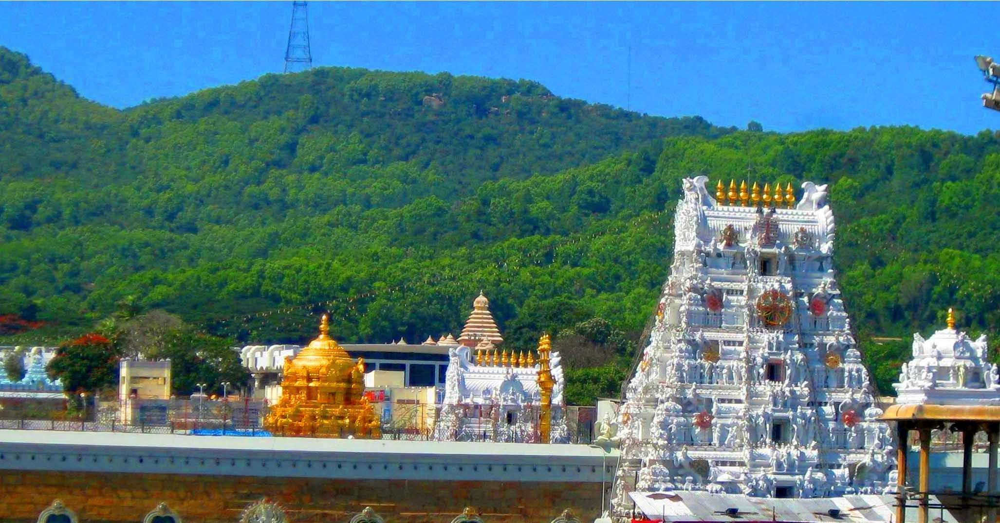
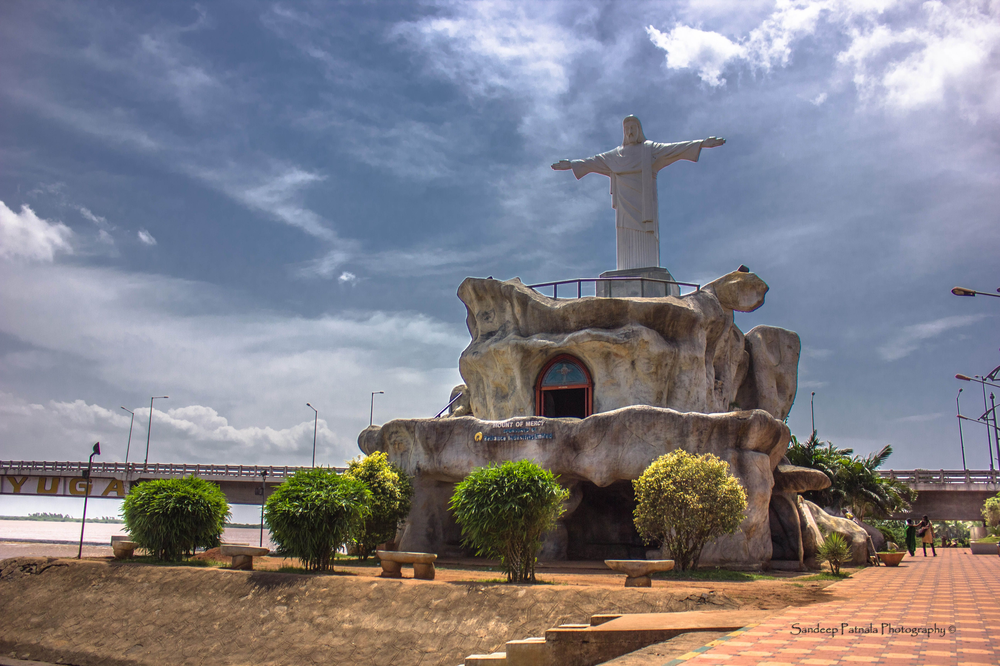
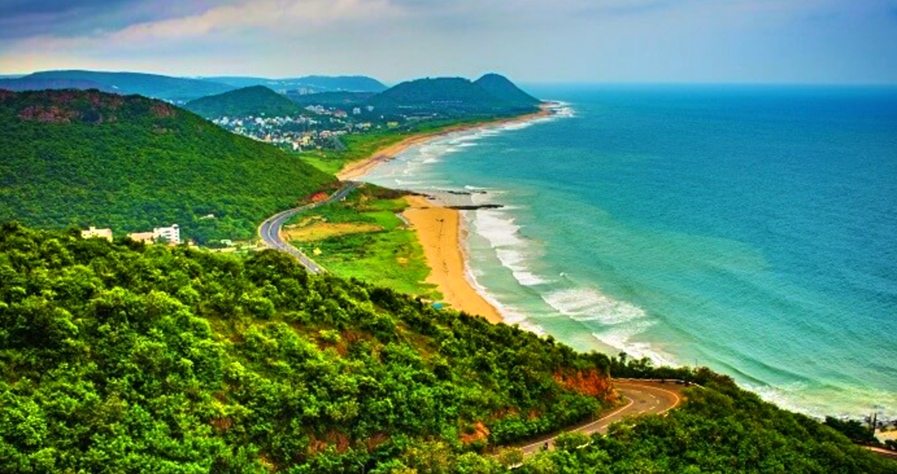

Home
About
Portfolio
Services
Contact

TOURISM PLACES
TIRUPATI
The Venkateswara Temple in Tirupati, dedicated to Lord Venkateswara, is one of the most visited and wealthiest temples globally.
SEE MORE

TOURISM PLACES
YANAM
Yanam Beach offers a tranquil seaside experience with its clean sands and picturesque views of the Godavari River merging with the sea.
SEE MORE
TOURISM PLACES
MARADUMALLI WATERFALLS
Maredumilli Waterfalls is a stunning natural attraction known for its pristine waters,a peaceful ambiance perfect for nature lovers.
SEE MORE

TOURISM PLACES
VIZAG BEACH
RK Beach in Visakhapatnam (Vizag) is a popular coastal destination with a vibrant atmosphere, ideal for relaxation.
SEE MORE
<
>